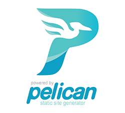

Sooner or later, an article will require an attachment. These accompanying non-markdown files are usually images, maybe pdfs, or even fully working pieces of code that are referenced by the article.
How exactly to best manage these extra files is more preference than best practice. This article examines a strategy that makes articles and their respective assets more modular than what's available with the default settings.
Pelican Asset Management
Pelican treats the articles and assets as two different types of source material. The article are, of course, articles, but to Pelican, the assets are static files. And yes, there's the third class of content, pages, but we'll ignore them for now.
Pelican also splits the discovery and processing of these assets into two distinct operations. So while the markdown files and the accompanying image files could be stored next to each other, the Pelican build process could move them to different locations.
If you're used to writing Markdown in VSCode (or any other tool that immediately renders Markdown) this may be a bit jarring. Everything could very well appear to work in the editor only to mysteriously break in the final website update.
Global Assets
Out of the box, Pelican works with the following example structure:
console
project/
├── content
│ ├── articles/
│ │ ├── article1.md
│ │ └── article2.md
│ ├── images/
│ │ └── pelly.png
│ ├── pdfs/
│ │ └── pelly.pdf
│ └── pages/
│ └── test.md
└── pelican.conf.py
The articles and pages are both separate types of content and have their own distinct discovery options, the respective ARTICLE_PATH and PAGES_PATH settings. However, the images and pdf are static files and are discovered by the STATIC_PATHS setting. These are all documented in the url settings section of the Pelican options page.
The thing to not here is that both the image and pdf files in that structure are separated from their respective articles. This makes sense if these assets are meant to be accessible from multiple articles and/or pages in the website. However, if those assets are article specific, then this layout does not make sense. As more articles are added to this structure it will be harder to track which asset is referred to by which source.
Article Specific Assets
To make things more modular, we keep the assets specific to the article along side the article. In our above example, this would transform article1 from a file into a folder containing the image, the pdf, and the respective article:
console
project/
├── content
│ ├── articles/
│ │ ├── article1/
│ │ │ ├── images/
│ │ │ │ └── pelly.png
│ │ │ ├── pdfs/
│ │ │ │ └── pelly.pdf
│ │ │ └── article.md
│ │ └── article2.md
│ └── pages/
│ └── test.md
└── pelican.conf.py
To make this work, we first configure Pelican to generate slug folders instead of individual pages. We do this easily enough with the following settings into our pelicanconf.py file:
python
ARTICLE_PATHS = [
'articles'
]
ARTICLE_URL = 'articles/{slug}/'
ARTICLE_SAVE_AS = 'articles/{slug}/index.html'
The above settings configure Pelican to discover files in the articles folder, save them as index.html files in the pages's slug folder, and update the url to the cleaner folder style. The slug value comes from the article's slug metadata field, which we set at the top of each article.
The next part is to configure Pelican to move the assets to a relative folder inside the slug folder instead of the global folder. This is done by attaching the files to the article with the {attach} keyword inside our article1\article.md file:
```markdown
Title: Test Article Category: test Date: 2014-10-31 Slug: article1
This is an image:

This is a link to a pdf files.
```
Just like the {static} and {filename} tag, Pelican uses a {attach} tag to mark the link for special handling. Here,Pelican will move the asset relative to the referring file instead of the more global location denoted by {static}.
The AutoStatic Plugin
The attach method works well for assets that are directly linked to the article. This doesn't work for internal assets,like custom css or javascript files. Those files are not displayed like an image or a download link so there is no way to {attach} them to the article.
Fortunately, Alexandre Fonseca's autostatic plugin handles these internal assets quite nicely. His plugin creates a new {static} tag that acts the same as the {attach} tag while also extending it with additional options.
There's more info in the project's readme, but one nice feature is it ability to read the tag from anywhere in the article -- including the metadata section. That allows us to lump all of the assets into a single place and removes any non-markdown tag from the actual article.
Consider our example from above where we used the {attach} tag in the links to the png and pdf files. With autostatic we can restore those links to pure markdown links and register all local assets in the metadata:
```markdown
Title: Test Article Category: test Date: 2014-10-31 Slug: article1 Attachments: - '{static images/pelly3.png}' - '{static pdfs/pelly3.pdf}'
This is an image:

This is a link to a another pdf files.
```
This is an image:
This is a link to a another pdf files.
There's a few things to note with our example:
-
We created a new metadata field,
Attachment, but that name is arbitrary and it could be called anything, likeFilesor evenAssets. Pelican allows dynamically created metadata fields, as long as it doesn't conflict with existing metadata. -
The plugin scans the rendered metadata and the rendered html document, processing any
{static}tag defined by theAUTOSTATIC_REFERENCE_PATTERNregex expression. Any matching files are copied to the respective location and any references in the metadata or html is replaced with the qualified url, so as along as the file is referenced at least once, it will be copied. -
The example's YAML has formatted the metadata as a list of strings. This is to work around some YAML processor which might interpret the raw
- { .... }as a list item referencing a mal-formed dictionary. We work around that by escaping the expression as a string- `{ .... }`. -
The plugin is a little too greedy with processing the various
{static}tags in the file. Out of the box, the plugin will process everything, including any references in code samples -- even through it should be ignored because the content is rendered in a<code>html block.To work around that, this site changes the plugin's
AUTOSTATIC_REFERENCE_PATTERNsetting to explicitly use the metadata's single line usage of- '{static ...}'. We do this by changing the regex pattern in thepelicanconf.py:python AUTOSTATIC_REFERENCE_PATTERN = r"""^- '{static(?:\s+|\|)((?:"|')?)(?P<path>[^\1=]+?)\1(?:(?:\s+|\|)(?P<extra>.*))?\s*}'$"""This works because the plugin processes the rendered html as a single block of text and processes each value in the metadata list as single lines that starts with a
-and ends with the}.
After a little bit of configuration, the autostatic plugin does a pretty good job of solving our problem. Not only does the plugin allow us to use article assets in a more relative way, but it also gives us the ability to link all assets as attachments via the metadata section. Wether intentional or not, this not only make asset management more modular, but also promotes a similar workflow pattern used by other CMS platforms.